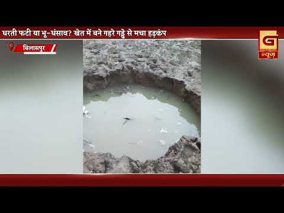
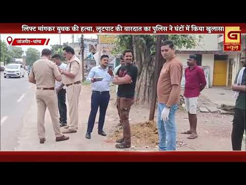
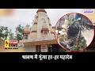

Bilaspur News Hub
EVENT3

The Hitavada · Scraped: 2026-08-03 05:48:10
Indian shuttler Tanvi Sharma claimed her first BWF Super 300 title at the Taipei Open, defeating a top‑ranked opponent in the final. The victory marks a historic moment for Indian badminton.

The Hitavada · Scraped: 2026-08-03 05:48:10
Gulveer Singh became the first Indian athlete to win two medals at the Commonwealth Games, securing bronze in the men’s 5000m race. His performance adds to his previous medal and marks a historic achievement for Indian athletics.

G News Bilaspur · Published: 2026-08-03 | Scraped: 2026-08-03 16:20:44
In Mohanakhar village, a deep pit resembling a well has mysteriously formed in a farmer's field, raising concerns about land stability. Authorities are investigating the cause.
GOVERNMENT9

Nai Dunia Bilaspur · Published: Mon, 03 Au | Scraped: 2026-08-03 05:48:10
The Food and Drug Administration of Bilaspur has imposed a strict ban on the use of analog (synthetic) paneer in hotels and restaurants, warning strict action if violated. The move aims to protect public health and ensure food safety standards.

Lokswar · Published: Mon, 03 Au | Scraped: 2026-08-03 05:48:10
Sandhya Singh has been named Pradesh Mahamantri of Loktantra Prahari after a key meeting in Raipur, marking a significant leadership role in the state's political arena.

Lokswar · Published: Mon, 03 Au | Scraped: 2026-08-03 09:04:30
The monsoon has become active across Chhattisgarh, prompting orange and yellow alerts in several districts. Authorities warn of heavy rain and lightning strikes. Residents are advised to take precautions.

Nai Dunia Bilaspur · Published: Mon, 03 Au | Scraped: 2026-08-03 12:57:58
The Chhattisgarh High Court has declared illegal a prohibition on using land without prior acquisition and compensation. The judgment clarifies that authorities must follow due process before imposing land‑use restrictions.

CG Wall · Published: Mon, 03 Au | Scraped: 2026-08-03 12:57:58
Revenue patwaris in Bilaspur have launched a protest demanding pending promotions and equal pay, accusing the government of discrimination. The district unit of the Chhattisgarh Revenue Patwari Association submitted a memorandum to the chief secretary.
Lokswar · Published: Mon, 03 Au | Scraped: 2026-08-03 12:57:58
Coal India Limited has increased assistance for its retired employees, focusing on enhanced pension benefits and welfare measures in Bilaspur. The initiative aims to improve financial security and support for former staff.

BREAKINGUniversity secretary arrested for salary scam / विश्वविद्यालय में वेतन घोटाला, कुलसचिव गिरफ्तार
CG Wall · Published: Mon, 03 Au | Scraped: 2026-08-03 16:20:44
A daily wage employee at Hemchand Yadav University reported missing salary, prompting a police probe that uncovered a fraud scheme. The university secretary was arrested for embezzling funds.
Lokswar · Published: Mon, 03 Au | Scraped: 2026-08-03 20:59:08
The BJP Yuva Morcha has named Mahishi Bajpayee as the new in-charge of its Bilaspur Madhya Mandal to strengthen and activate the organization. The appointment aims to boost youth engagement in the region.
G News Bilaspur · Published: 2026-08-03 | Scraped: 2026-08-03 16:20:44
Revenue officers protested demanding correction of salary anomalies and guaranteed promotion timelines. The agitation reflects long-standing discontent among patwaris.
HEALTH2

Nai Dunia Bilaspur · Published: Mon, 03 Au | Scraped: 2026-08-03 05:48:10
After a brief lull, malaria cases have resurfaced in the Kota area of Bilaspur, with three new patients detected on Sunday. The health department has been put on high alert and is conducting mosquito control measures to curb the spread.

Lokswar · Published: Mon, 03 Au | Scraped: 2026-08-03 12:57:58
Ujjwal Hasdev‑Unat Saraguja organization organized a free health camp in the tribal village of Sitkalo, offering medical check‑ups and medicines. Villagers received treatment and essential drugs, improving community health.
INFRASTRUCTURE1

Nai Dunia Bilaspur · Published: Mon, 03 Au | Scraped: 2026-08-03 12:57:58
The state will spend ₹29.77 crore to upgrade the Mopka‑Khera and Sipat‑Baloda roads, enhancing connectivity and easing travel between Korba and Baloda. The improved highways are expected to boost regional trade and reduce travel time.
INSTAGRAM NEWS48


Two teachers were found drinking beer inside Devjhar Amali school and misbehaved with journalists covering the incident. The case has sparked outrage over discipline in educational institutions.


Villagers of Devkirari in Bilha assembly suffer due to badly damaged roads and stagnant water, hampering daily travel and access to services. Residents demand immediate repairs.


The post appears empty or missing details, providing no substantive information for summarization.

Police intercepted a Volvo bus near Majhso and recovered 8.72 grams of heroin, arresting a young man from Uttar Pradesh. The seizure highlights ongoing drug trafficking concerns.


A video shows students partying with alcohol inside a school classroom, causing alarm and viral spread. The incident has sparked outrage and calls for strict action.


Bilaspur Health Dept reports 27 malaria cases in a week, raising concerns. Authorities urge residents to use mosquito nets and eliminate standing water to curb spread.


A liquor shop in Vyapar Vihar caught fire, destroying goods worth lakhs. The cause is under investigation and no injuries were reported.


A youth's body was found floating in a pond, prompting police investigation. Authorities have launched a probe to identify the victim and determine the cause of death.


Illegal encroachment at the tehsil office premises was reported, prompting collector action after a Lokswar exposé. The encroachment is expected to be removed soon.


Before the festivals, Gol Bazar in Bilaspur is under 360-degree police surveillance. The heightened monitoring aims to ensure law and order and prevent any mishaps.


Police have dismantled an online betting operation based in Bihar, apprehending three individuals involved. The crackdown follows intelligence inputs and highlights growing concerns over illegal gambling networks.


A school headmaster was placed in police custody following allegations of inappropriate behavior towards female students. The incident was reported after students lodged a complaint, prompting an investigation.


Two migrant laborers from Chhattisgarh were killed in a terrorist attack in Kulgam, prompting grief across the state. Chief Minister expressed deep shock and announced assistance for families.


The Ghonga reservoir is currently overflowing, offering a picturesque sight to visitors. The high water level highlights the region's water resources and scenic beauty.

A social media post invites users to share their village name, promising a future visit to their hometown. It aims to connect communities across Chhattisgarh.


The Bilaspur district administration launched an Instagram campaign promoting drug-free youth under #vikshitbharat2047. The post uses reels to spread awareness and encourage young people to stay away from alcohol and drugs.

A national resolve campaign was launched at Guru Ghasidas Central University to promote drug-free youth and develop a healthier society. The event emphasized collective commitment towards a drug-free future under the Vikshit Bharat initiative.

Smart meters now provide real-time electricity consumption data, allowing households to monitor usage instantly and manage expenses better. This initiative helps reduce unnecessary power consumption and promotes energy efficiency in Bilaspur.


The Lok Sabha introduced an amendment bill to curb paper leaks, strengthening examination integrity. This move is expected to restore trust among students and ensure fair assessment processes. Authorities praised the strict measures as a step toward transparent education.


A safety awareness campaign urges parents to stay alert to protect children from potential dangers. The initiative highlights the importance of vigilance and proactive measures in ensuring children's security. Community participation is encouraged to create a safer environment for kids.
NEWS10

The Hitavada · Scraped: 2026-08-03 09:04:30
The Hitavada · Scraped: 2026-08-03 09:04:30

The Hitavada · Scraped: 2026-08-03 09:04:30
The Hitavada · Scraped: 2026-08-03 09:04:30
The Hitavada · Scraped: 2026-08-03 09:04:29

The Hitavada · Scraped: 2026-08-03 09:04:29

The Hitavada · Scraped: 2026-08-03 09:04:29
The Hitavada · Scraped: 2026-08-03 09:04:29
The Hitavada · Scraped: 2026-08-03 09:04:29
The Hitavada · Scraped: 2026-08-03 09:04:29
POLICE10

Nai Dunia Bilaspur · Published: Mon, 03 Au | Scraped: 2026-08-03 09:04:30
A young student was blackmailed for 14.5 lakh rupees and half a kilogram of gold by the son of an ASI after being threatened in a Bilaspur hotel. The accused was later arrested by police. The incident highlights rising extortion tactics in the region.

Lokswar · Published: Mon, 03 Au | Scraped: 2026-08-03 12:57:58
Durg police uncovered an organized gang that broke car windows and stole items worth ₹4.90 lakh. Five suspects were arrested after the theft was revealed, highlighting improved crime‑fighting efforts.
Lokswar · Published: Mon, 03 Au | Scraped: 2026-08-03 12:57:58
In Janjgir‑Champa, a young man was killed and robbed after accepting a lift from strangers. Police swiftly detained two minors in connection with the brutal crime.

CG Wall · Published: Mon, 03 Au | Scraped: 2026-08-03 16:20:44
Under Operation Prahar, police raided a kirana shop posing as a liquor outlet, exposing illegal alcohol trade. The bust underscores ongoing efforts to curb illicit sales in Bilaspur district.

BREAKINGEx-sarpanch stabbed to death after resisting robbery / लूट का विरोध करने पर पूर्व सरपंच की हत्या
Lokswar · Published: Mon, 03 Au | Scraped: 2026-08-03 16:20:44
An ex-sarpanch was fatally stabbed after confronting robbers in Durg district. The killing sparked public outrage and calls for stronger law enforcement.
Lokswar · Published: Mon, 03 Au | Scraped: 2026-08-03 16:20:44
Janjgir‑Champa police arrested a fraudster from Indore who promised a ₹1‑crore loan and stole ₹10.87 lakh. The case highlights rising financial scams in the region.

CG Wall · Published: Mon, 03 Au | Scraped: 2026-08-03 19:23:39
A group of masked dacoits attacked a liquor shop in Gataura, Masturi, Bilaspur late at night. Unable to break the locker, they stole the CCTV footage and expensive liquor before fleeing.

CG Wall · Published: Mon, 03 Au | Scraped: 2026-08-03 19:23:39
A speeding Skoda driven by a negligent driver caused a fatal road accident in Mungeli, resulting in one death. The driver has been arrested and sent to jail.

CG Wall · Published: Mon, 03 Au | Scraped: 2026-08-03 20:59:08
Police used scientific evidence to secure a life sentence for a murderer in a blind murder case, despite witness changes. The investigation highlighted the reliability of forensic data over shifting testimonies.

G News Bilaspur · Published: 2026-08-03 | Scraped: 2026-08-03 16:20:44
A young man was murdered and robbed after asking for a lift. Police solved the case within hours, arresting the culprits.
RAILWAY1

Lokswar · Published: Mon, 03 Au | Scraped: 2026-08-03 05:48:10
A passenger train caught fire at Simri Bakhtiyarpur station in Bihar, but quick response allowed all passengers to evacuate safely. No casualties were reported, and the incident highlights the importance of emergency preparedness on Indian railways.
SOCIAL1
Huge rush of devotees at Shiva temples on first Sawan Monday / सावन के पहले सोमवार पर शिवालयों में उमड़ा आस्था का सैलाब
G News Bilaspur · Published: 2026-08-03 | Scraped: 2026-08-03 16:20:44
On the first Monday of Sawan, Shiva temples saw a massive influx of devotees. The religious fervor highlighted the cultural significance of the festival.
YOUTUBE VIDEOS9
Belpatra, the leaves of the wood apple tree, are considered sacred to Lord Shiva due to their natural shape resembling the Shiva lingam. Offering them symbolizes purity and devotion. This practice is deeply rooted in Hindu tradition.
Fraudsters are sending counterfeit loan offers via messages to unsuspecting residents of Bilaspur. These scams aim to extract personal data or money. Authorities urge people to verify offers through official channels.
A criminal group in Bilaspur pretended to beg to lure victims before assaulting and robbing them. Police have busted the gang and recovered stolen items. The case highlights the danger of exploiting vulnerable situations.
A bridge collapse in Bilaspur has left a bus carrying 35 passengers stranded, prompting urgent rescue operations. Authorities are working to evacuate the victims and assess structural damage.


Grand News Bilaspur delivers evening final updates for 03.08.2026, covering key regional developments. Stay tuned for the latest headlines from Chhattisgarh.
The Kavach system will provide real-time signal updates to train drivers, enhancing safety on Indian Railways. This indigenous technology aims to reduce accidents and improve operational efficiency.
Revenue officers staged a demonstration in Bilaspur demanding resolution of salary discrepancies and timely promotions. The protest highlights ongoing grievances among government employees.
A road that has remained unrepaired for 12 years continues to hinder commuters in Bilaspur, causing congestion and safety concerns. Residents are urging immediate repair work.

A rare astrological alignment led to a special Shiva worship ceremony in Bilaspur, drawing many devotees. The event highlights local religious traditions.